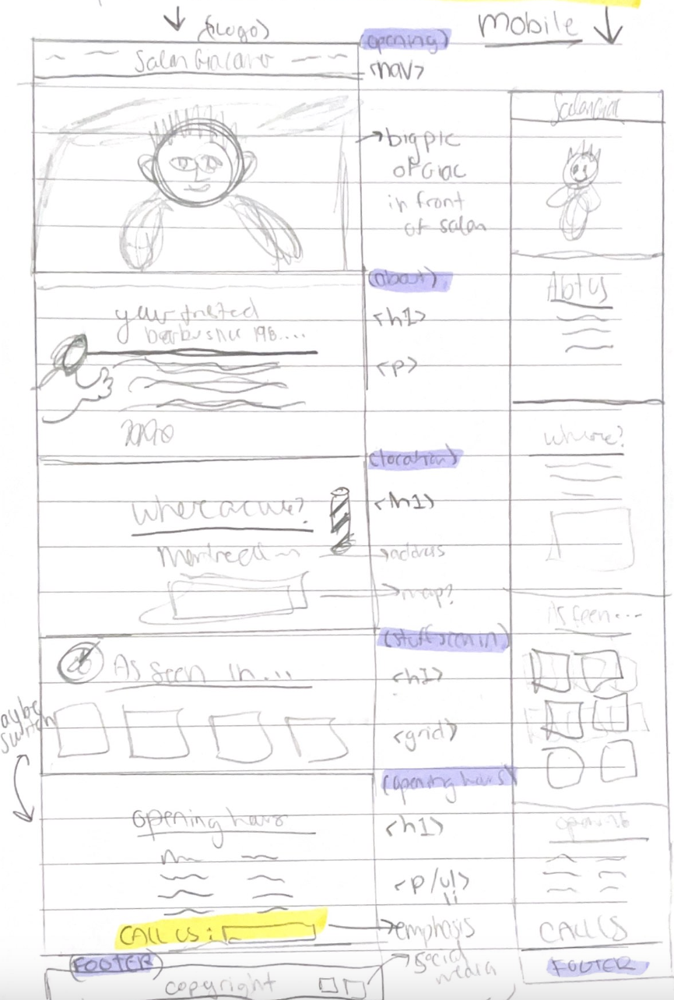
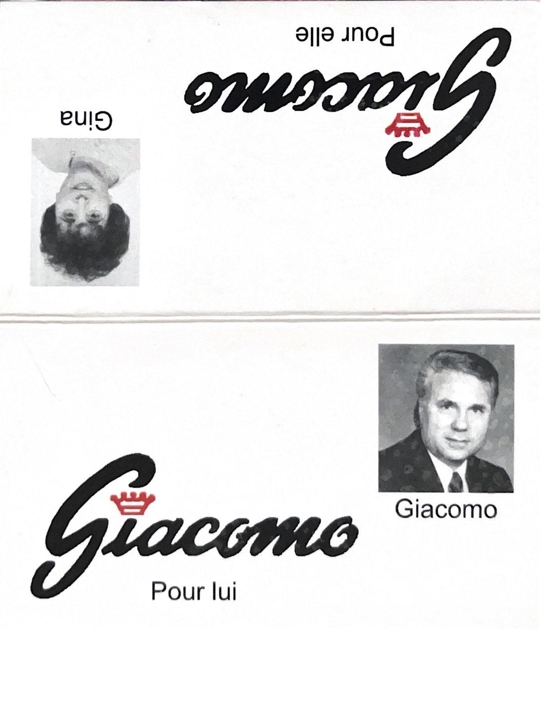

Salon Giacomo Lui et Elle is a barber shop situated in Montreal-North originating from the 1960’s. The owner and head barber, Giacomo Delle Donne, immigrated as a teenager from Italy to Montreal and opened his own shop in 1961. For generations, clients have sat in his vintage orange barber chairs and shared countless stories. For years, Giacomo’s has been a place for the community to come together, relax, chat, and have fun over a shot of espresso. At 83, Giacomo is still passionate about cutting hair and making every one of his clients smile with their new hairstyle.
To highlight the tradition, the heart, and the essence of the salon. To create a welcoming space to reflect the atmosphere of the salon. To have a strong and positive impression that reflects the businesses’ core values that have been there since the beginning of the salon. To be bilingual (EN/FR): As he is situated in the heart of a bilingual community in Montreal and many of his clients speak various languages including, English, French, Italian, Turkish, etc. To create a significant online presence and have all the information for the salon in one place.
These are the original wireframes that I used to base the design of the website off of. I wanted to highlight Giacomo and his true barber experience he provides to his clients.
To create the new logo for Salon Giacomo, I based myself off of the logo on his original business card as I wanted to keep the authenticity and essence.
As I was coming up with a new logo, I came up with many different variations. I wanted to modernize the logo while also caturing the original 60's feeling that the font guves off. Therefore, I sketched the logo by hand and incorporated elememts from the original logo.
For my primary colour palette, I chose to use black, red, blue, grey, and white as these are classic barber shop colours that can be found in typical elements such as the pole, the chairs, and more. The red that I used is the same red that is found in the original logo to preserve the nature and soul of the brand. For secondary colours, I chose to use yellow, light blue, beige, and brown.
The font pairing that I found combined modern fonts and vintage fonts to give the perfect authentic and fresh balance. The calligraphic font, LOBSTER by Google Fonts, is used for big headlines. The sans-serif font, RUBIK by Google Fonts, is used for body text and secondary headlines.
ABCDEFGHIJKLMNOPQRSTUVWXYZ 1234567890
ABCDEFGHIJKLMNOPQRSTUVWXYZ 1234567890

I created an Instagram account for Salon Giacomo to provide them with an online presence and engage with more people. The content forn this account is still in the works but it consists of: videos of the head barber Giacomo greeting clients and talking to the camera aswell as pictures of satisfied clients.
To successfully complete this project, I went back to the brand’s roots. For the redesign of the brand and the logo, I included some of the original elements from the salon to capture its authenticity. I found fonts and colours that support the original traits and elements of the salon but also make it more modern and fresh. To create the illustrations for this project, I based myself off of real pictures for an accurate representation of Giacomo and the elements that one would find at his salon. These illustrations and their design style were an attempt to make an old and well established brand fresh, fun, cute, and attractive to a larger audience. I also used a grandfather and warming tone of voice to make people feel welcome as soon as they open the website, giving the same effect one would get if they walked into the Salon. Lastly, to give more credibility I added links to articles and testimonials, proving how impactful the shop experience is.